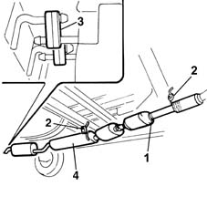
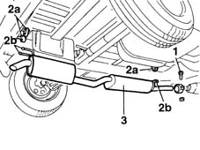
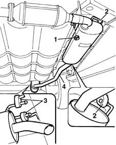

1076B20 rear exhaust silencer - r + r
- Path
- Procedures > 10 ENGINE UNIT > 1076 EXHAUST PIPES AND SILENCERS > 1076B exhaust pipes and silencers > 1076B20 rear exhaust silencer - r + r
- Kind
- repair procedure (removal / refitting; the operation number is the code)
- Applies to
- all engines; all production periods
- Interactive page
- https://sloeber94.github.io/elrnDB-fMltpl/en/#/2891291
Applies to: engines: 1.6 16v; all production periods
 Removing
Removing
 Refitting
RefittingPlace the car on a ramp.
Raise the vehicle.
1. Undo the nut securing the exhaust pipe to the catalytic converter.
2. Release the intermediate rubber blocks from their pins on the body.
3. Release the rear rubber blocks from their pins on the body.
4. Remove the exhaust tail-pipe with silencer and catalytic converter.

Applies to: engines: 1.6 16v; all production periods
Refitting
RemovingCheck that the exhaust pipe and silencers are undamaged.
Fit the exhaust pipe.
Secure the rubber retainer to the pins.
Tighten the nut fixing the retaining flange between the front section of the exhaust pipe and the first silencer.
Lower the vehicle.
Remove the car from the lift.
Applies to: engines: 1.9 JTD 8V; all production periods
Removing
RefittingPlace the car on a ramp.
1. Undo the catalytic converter union bolt.
2. Remove rubber plugs (2a) from support pins (2b).
3. Remove the rear silencers by withdrawing from the catalytic converter.

Applies to: engines: 1.9 JTD 8V; all production periods
Refitting
RemovingFit the rear silencers by inserting the front section into the catalytic converter.
Tighten the bolt securing the ring joining catalytic converter - rear silencer.
 | Fastening | Component | Ø | Value (daNm) |
|---|---|---|---|---|
- | Nut | CATALYTIC CONVERTER (ONE) | - | 5.5 |
Fit the pins near the rubber blocks, then secure the pins to the blocks.
Applies to: engines: 1.6 16v; all production periods; only with equipment: BIPOWER and BLUPOWER
Removing
RefittingPlace the car on a ramp.
Raise the car.
1. Undo the nut securing the exhaust pipe to the catalytic converter.
2. Release the intermediate rubber blocks from their pins on the body.
3. Release the rear rubber blocks from their pins on the body.
4. Remove the exhaust tail-pipe with silencer and catalytic converter.

Applies to: engines: 1.6 16v; all production periods; only with equipment: BIPOWER and BLUPOWER
Refitting
RemovingCheck that the exhaust pipe and silencers are undamaged.
Fit the exhaust pipe.
Secure the rubber retainer to the pins.
Tighten the nut fixing the catalytic converter to the rear silencers.
| Fastening | Component | Ø | Value (daNm) |
|---|---|---|---|---|
- | Nut | CATALYTIC CONVERTER (ONE) | - | 5.5 |
Lower the vehicle.
Remove the car from the lift.